开心果 Need Car · 2024-03-22T07:05:00+08:00 · 微信原文
开发的小伙伴，对VSCode应该并不陌生。对我来说，对VSCode的偏爱要高于其他的编码软件。丰富的插件（Plug-in），几乎可以拓展出你想要的绝大多数需求。本文，聊一聊两个比较实用的技巧。
在开发阶段，工程师会不断的调试和修改代码，有时，某个文件改了很多次，还是觉得之前的某次修改好，但是，由于保存导致的覆盖，追不到当时的草稿。没关系，用local-history可以保存每次修改记录，以便于回溯；
使用Git管控代码，是比较常见的一种方式。但是，每个工程师的工作内容/方式不同，有些本地测试文件或者编译文件，没有必要提交到远端仓库。因此，可以编写.gitignore文件，告诉Git，哪些文件或目录不再被纳入版本控制。
1、local-history安装及文件保存路径设置
打开VSCode，在"Extensions"中搜索"local history"，单击"install"即可，如下所示：
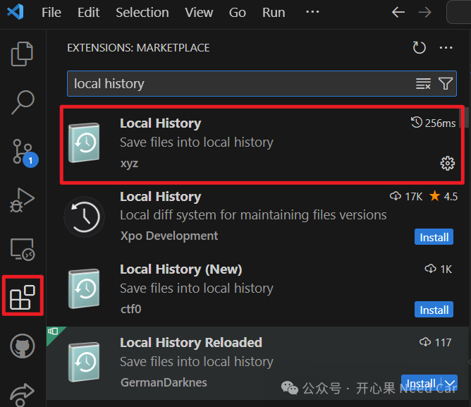
使用local history有一点需要注意：文件保存路径不要与编译器编译路径重合，否则，编译器会将local history保存的文件也进行编译。很多时候，VSCode打开的工程也是编译器的搜索路径。所以，最好的处理方式就是将local history保存的历史文件保存到非编译器搜索路径中，具体操作如下：
（一）自定义local history文件保存路径
比如：本文将local history保存的历史文件放到D:\WorkSpace\Tasking\VSCode_CodeHistory\MulitiCAN路径。
1、File->Preferences（首选项）->Extensions，如下所示：
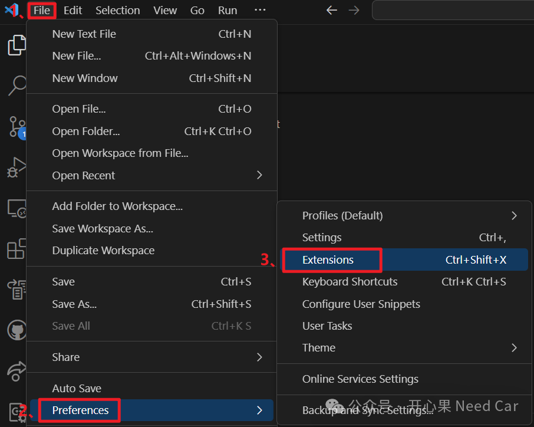
2、在弹出的界面中，搜索"local-history"->找到配置项->在Local-history：Path中输入修改文件历史保存路径，如下所示：
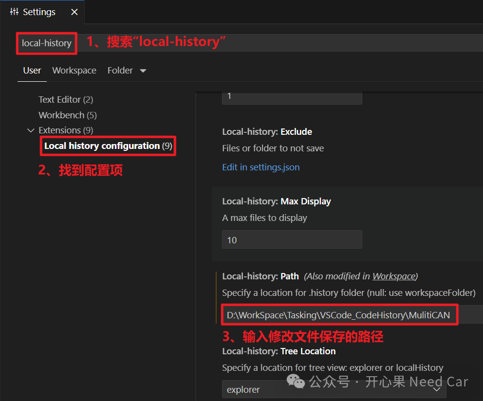
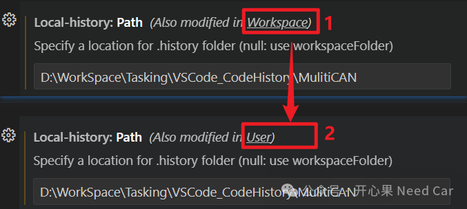
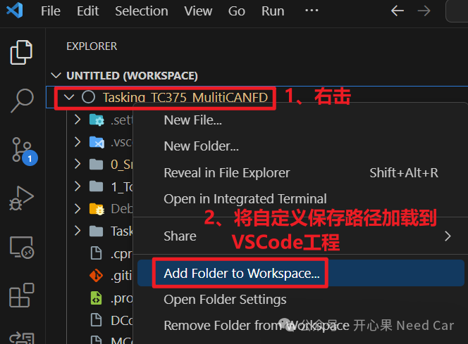
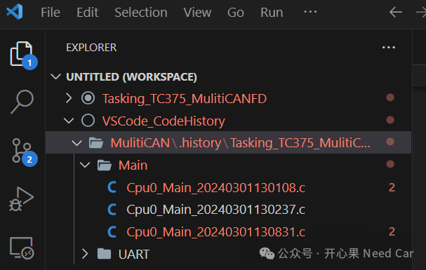
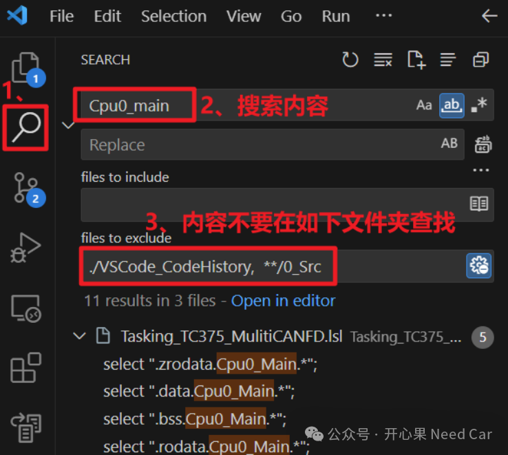
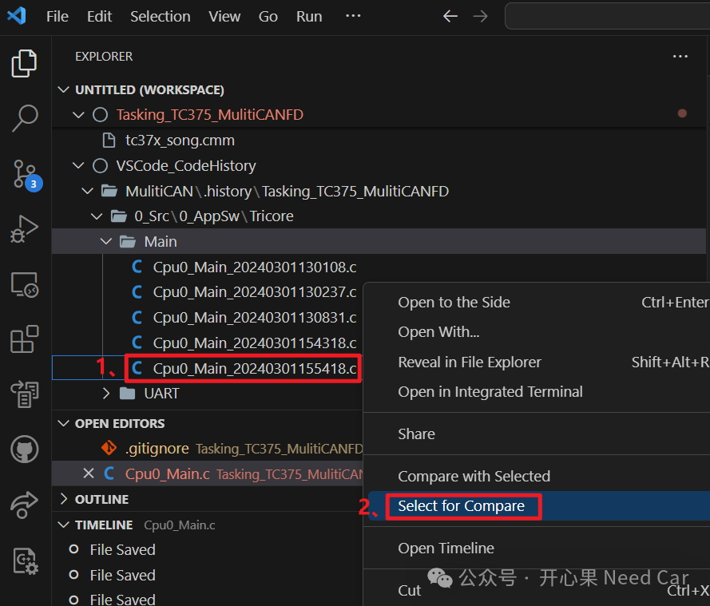
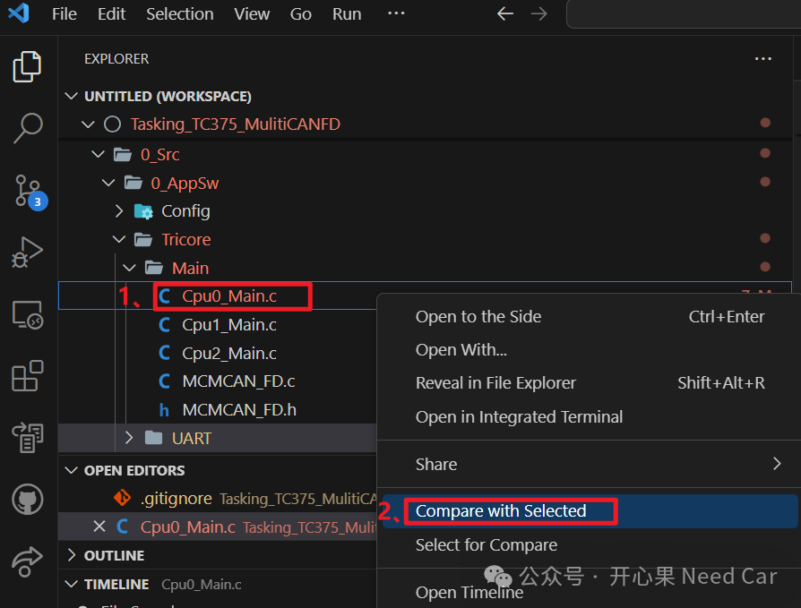
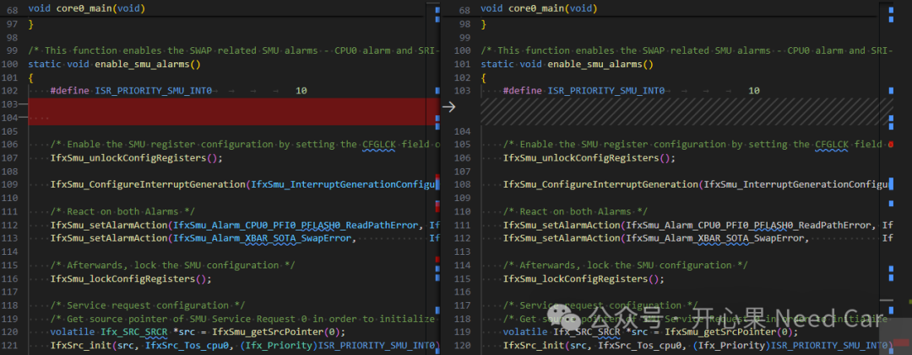
2、.gitignore操作
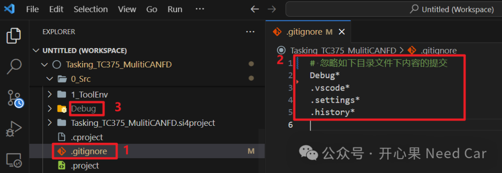
如果.gitignore操作不成功，可以参考如下链接：
https://blog.csdn.net/qq_21441663/article/details/134061627
往期精彩回顾
Matlab:手写C MEX S-Function，没那么难
Boot开发：App诊断请求（$10 02/82）信息"传递"给Boot方式（四）